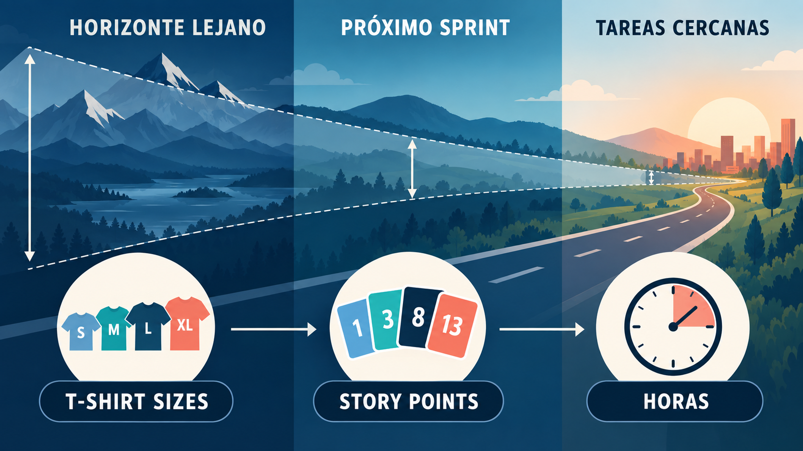
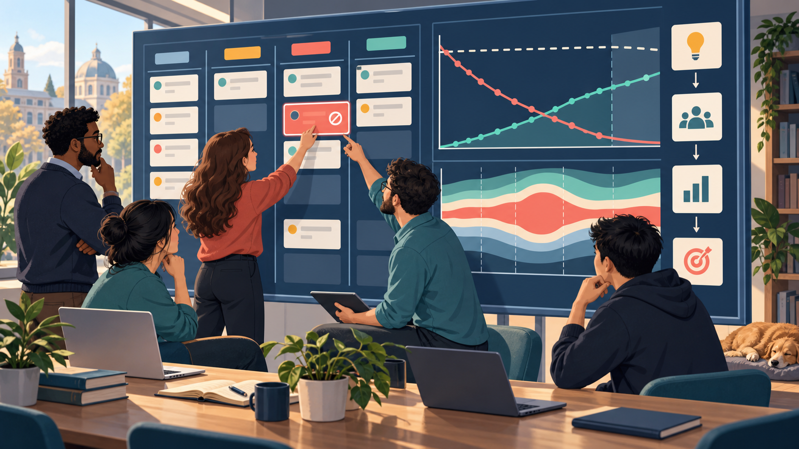
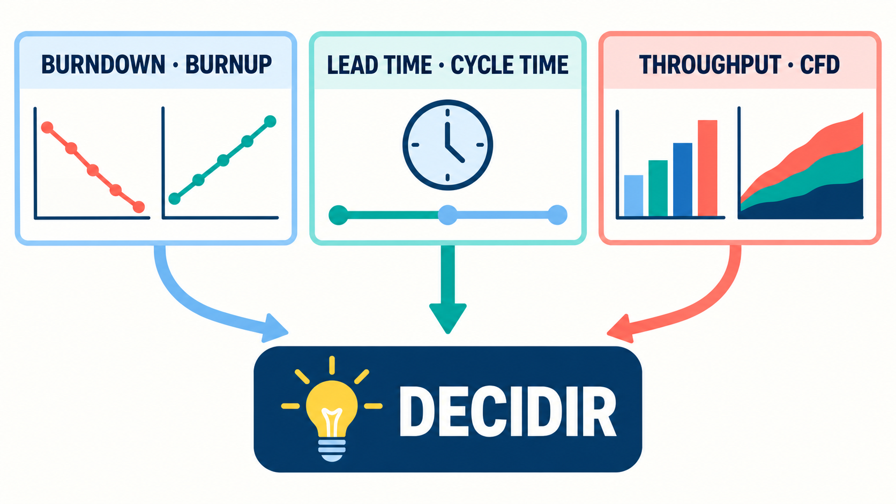

"No estimamos para acertar el futuro con exactitud; estimamos para tomar mejores decisiones hoy con la información que tenemos." — Principio de la estimación ágil.
En el Módulo 3, TurnoYa pasó de una necesidad a un backlog ordenado. Ahora el equipo debe responder qué puede completar, cuándo podría entregarlo y cómo reconocer a tiempo un problema. Vamos a distinguir tamaño del trabajo, disponibilidad y desempeño observado; construir un plan de Sprint; visualizar flujo; interpretar métricas y gestionar riesgos. Puntos, Poker y gráficos son técnicas posibles, no requisitos universales de Scrum. También veremos cómo pronosticar con datos de flujo sin estimar cada tarjeta en puntos.
1. Estimar y pronosticar bajo incertidumbre
TurnoYa tiene una fecha deseada, pero todavía desconoce el costo de una integración. ¿Cómo comunicar una previsión sin fingir certeza?
Toda estimación depende de información, supuestos y contexto. En gestión predictiva pueden definirse y descomponerse partes conocidas del alcance, estimar esfuerzo y revisar riesgos. En productos con necesidades emergentes conviene trabajar por horizontes, colaborar con quienes harán el trabajo y actualizar el pronóstico. Esto no equivale a decir que “predictivo” es siempre cascada ni que sumar horas-persona produce automáticamente una fecha: también importan secuencia, dependencias, disponibilidad y esperas.
La gestión ágil parte de un diagnóstico distinto: si el alcance va a cambiar y la incertidumbre es alta, insistir en estimar en horas exactas y comprometerse con fechas fijas de entrega por tarea genera una falsa sensación de precisión que termina en incumplimientos, sobrecostos y frustración tanto del equipo como del cliente. Por eso los métodos ágiles proponen dos cambios de fondo en la forma de estimar. El primero es estimar el esfuerzo relativo en lugar del tiempo absoluto: en vez de preguntar "¿cuántas horas lleva esta historia de usuario?", el equipo pregunta "¿esta historia es más grande, más chica o del mismo tamaño que esta otra que ya hicimos?". El segundo cambio es que la estimación la hace el equipo completo que va a ejecutar el trabajo, no un gerente de proyecto o un arquitecto aislado del día a día del desarrollo, porque quienes van a programar, probar y desplegar el software son quienes mejor conocen la complejidad real de la tarea.
La estimación relativa puede facilitar comparaciones y conversaciones, pero no garantiza que los errores se compensen. Si muchas historias comparten una integración desconocida, sus errores pueden tener el mismo sentido. Los pronósticos basados en desempeño reciente resultan útiles cuando el sistema es razonablemente comparable; requieren revisar cambios de equipo, tamaño de ítems y restricciones. Estimar en horas tampoco es incorrecto por sí mismo: la falsa precisión aparece cuando el número se trata como certeza y se ignoran sus supuestos.
Es importante aclarar que "estimación ágil" no significa "no estimar" ni "estimar sin disciplina". Significa aceptar que toda estimación es una hipótesis basada en la información disponible en ese momento, comunicarla con el nivel de precisión que esa información permite (por eso se habla de rangos y de tamaños relativos, no de fechas exactas con dos decimales), y revisarla constantemente a medida que el equipo aprende más sobre el problema. Esta forma de estimar convive perfectamente con compromisos serios: un equipo maduro puede predecir con bastante exactitud cuántos Sprints necesita para completar un conjunto de funcionalidades, siempre que tenga un historial de velocidad estable y un backlog bien refinado.
1.1 La curva del cono de incertidumbre
El cono de incertidumbre representa la posibilidad de reducir la variación de nuestras estimaciones al obtener conocimiento. No fija un porcentaje universal de error ni se estrecha por el simple paso del tiempo: hacen falta decisiones, pruebas y reducción de riesgos. Una integración que sigue sin probarse conserva incertidumbre aunque el proyecto esté avanzado. Podemos comenzar con rangos amplios y revisarlos cuando aparezca evidencia relevante.

2. Tallas de remera: estimación inicial
Para comparar iniciativas lejanas no necesitamos discutir si valen siete u ocho puntos. Primero necesitamos reconocer su orden de magnitud.
Cuando el nivel de detalle disponible sobre una historia o una épica todavía es bajo —por ejemplo, al inicio de la planificación de un release, cuando se están priorizando grandes bloques de funcionalidad y todavía no se descompusieron en historias de usuario concretas— usar Story Points con precisión de Fibonacci puede ser prematuro y hasta contraproducente, porque simula una exactitud que el equipo todavía no tiene forma de sostener. Para estos casos se usa la técnica de T-Shirt Sizes (tallas de remera): el equipo clasifica cada ítem grande del backlog en categorías cualitativas de tamaño —XS, S, M, L, XL, y a veces XXL— sin asignar todavía un número puntual.
Esta técnica tiene tres usos frecuentes en la práctica profesional. El primero es la priorización rápida de un backlog extenso: en una sesión de refinamiento de una hora, un equipo puede clasificar por talla veinte o treinta épicas sin necesidad de discutir cada una en profundidad, lo cual sería inviable con Planning Poker tradicional. El segundo es la planificación de releases o roadmaps trimestrales, donde el objetivo no es prometer una fecha exacta sino dar una noción aproximada de cuánto "cabe" en un trimestre según la capacidad histórica del equipo (por ejemplo, "en un trimestre normalmente completamos unas 3 épicas L o su equivalente"). El tercero es como paso previo al Planning Poker: primero se clasifican las épicas por talla para priorizar el orden de refinamiento, y luego, cuando una épica entra en foco cercano al Sprint, se descompone en historias de usuario más chicas que sí se estiman con Story Points en Fibonacci.
| Talla | Equivalencia aproximada en Story Points | Ejemplo típico |
|---|---|---|
| XS | 1-2 | Ajuste de un mensaje de error o de un texto de ayuda |
| S | 3-5 | Agregar un filtro nuevo a una pantalla de listado existente |
| M | 8-13 | Nuevo formulario de alta con validaciones y persistencia en base de datos |
| L | 20-40 | Módulo nuevo de reportes con exportación a Excel y PDF |
| XL | Más de 40 (candidata a dividir) | Integración completa con una pasarela de pagos externa |
Es importante remarcar que esta tabla es orientativa y particular de cada equipo: la correspondencia exacta entre talla y puntos se construye con la experiencia acumulada, igual que ocurre con la escala de Fibonacci. Lo que no cambia es el principio de fondo: cuanto menos se conoce sobre un ítem de trabajo, más grueso debe ser el nivel de la estimación, y esa granularidad se va afinando a medida que el ítem se acerca al momento de ejecución.
3. Story Points: tamaño relativo del trabajo
Dos historias tienen una pantalla cada una, pero una depende de una API desconocida. Contar pantallas no alcanza para comparar tamaño.
Los Story Points (puntos de historia) son una técnica opcional utilizada por algunos equipos para estimar el esfuerzo relativo que demanda completar una historia de usuario. Un Story Point no representa una cantidad fija de horas ni de días: representa una combinación de tres factores que el equipo evalúa en conjunto al momento de estimar:
- Complejidad técnica: cuán difícil es el problema desde el punto de vista del diseño de la solución, la cantidad de componentes del sistema involucrados, y si existen dependencias con otros módulos o equipos.
- Volumen de trabajo: cuánto código, cuántas pantallas, cuántos casos de prueba o cuántos pasos concretos hay que ejecutar para dar la historia por terminada.
- Incertidumbre y riesgo: cuánto desconoce el equipo sobre esa historia; si hay tecnología nueva involucrada, si depende de un tercero, o si los criterios de aceptación no están del todo claros.
Al combinar estos tres factores en un solo número, el equipo evita el error de estimar solamente "cuánto código hay que escribir" (que ignora la complejidad y el riesgo) o de estimar solamente "cuán difícil parece" (que ignora el volumen). Por eso una historia puede valer más puntos que otra no porque tenga más líneas de código, sino porque tiene más incertidumbre o más riesgo técnico asociado.
La clave conceptual de los Story Points es la relatividad: el número en sí mismo no tiene significado absoluto, solo tiene sentido en comparación con otras historias estimadas por el mismo equipo. Decir "esta historia vale 5 puntos" solo es útil si el equipo tiene una referencia común de qué historia representó "3 puntos" y cuál representó "8 puntos" anteriormente. Por eso, al iniciar un proyecto o incorporar Story Points por primera vez, conviene que el equipo elija una o dos historias ya conocidas (idealmente ya completadas en un proyecto anterior, o una historia sencilla del propio backlog) como "historias ancla" o "historias de referencia", y calibre el resto de las estimaciones comparando contra esas anclas. Esto también explica por qué los Story Points de un equipo no son comparables entre equipos distintos: un "5" del Equipo A puede equivaler a un "8" del Equipo B, porque cada equipo construye su propia escala relativa según su experiencia, su stack tecnológico y su forma de trabajar. Comparar la velocidad de dos equipos distintos usando Story Points es un error metodológico frecuente que hay que evitar.
3.1 La escala de Fibonacci modificada
Algunos equipos usan la escala 1, 2, 3, 5, 8, 13, 20, 40, 100. Se conoce como Fibonacci modificada: coincide al principio con la sucesión, pero 20, 40 y 100 son categorías ampliadas, no sumas exactas de los dos valores anteriores. Separar más los tamaños grandes evita discutir diferencias que no podemos justificar con el conocimiento disponible. Es una convención opcional, no una medición física ni una exigencia de Scrum.
| Valor | Interpretación típica | Cuándo se usa |
|---|---|---|
| 1 | Trivial, casi automático | Cambio mínimo, sin ambigüedad ni riesgo (ej. modificar un texto en la interfaz) |
| 2 | Muy simple | Tarea pequeña y bien entendida, sin dependencias |
| 3 | Simple | Historia estándar de complejidad baja, con algún detalle a resolver |
| 5 | Moderada | Historia con cierta complejidad técnica o varios pasos, pero acotada |
| 8 | Compleja | Historia grande, con más de un componente involucrado o incertidumbre relevante |
| 13 | Muy compleja | Historia que probablemente conviene dividir en historias más chicas |
| 20 / 40 | Excesiva | Señal de alarma: la historia es en realidad una épica que debe descomponerse antes de entrar al Sprint |
| 100 / ∞ / ? | No estimable | El equipo no tiene información suficiente; se necesita un spike o investigación previa |
Un ejemplo concreto ayuda a fijar la idea. Supongamos que un equipo que desarrolla un sistema de gestión de turnos médicos tiene en su backlog la historia "Como paciente quiero recibir un recordatorio por WhatsApp 24 horas antes de mi turno para no olvidarme de asistir". El equipo discute y concluye que esta historia requiere integrar una API externa de mensajería (algo que nunca hicieron antes en el proyecto), configurar un job programado que dispare el mensaje, y definir qué pasa si el paciente cambia o cancela el turno después de que el recordatorio ya fue enviado. Comparada con una historia ya estimada como "3" ("Como paciente quiero ver el historial de mis turnos anteriores en una lista"), el equipo coincide en que esta nueva historia tiene bastante más incertidumbre técnica (integración externa nunca probada) y algo más de volumen de trabajo, así que la estima en "8". Si en cambio la integración con WhatsApp ya la hubiesen implementado en una historia anterior para otro flujo, es probable que esta misma historia bajara a "5" o incluso "3", porque gran parte de la incertidumbre ya estaría resuelta. Este ejemplo ilustra bien que el número de puntos no depende solo de "qué hay que hacer" sino de "cuánto sabe el equipo sobre cómo hacerlo".
4. Planning Poker: estimación colaborativa
Una persona estima tres puntos y otra trece. La diferencia puede revelar un riesgo que el equipo todavía no compartió.
Planning Poker (también llamado Scrum Poker) es una técnica opcional de estimación colaborativa que puede utilizarse dentro de Scrum para asignar Story Points a las historias de usuario. Es una dinámica de grupo estructurada, diseñada específicamente para evitar dos sesgos muy comunes cuando se estima en voz alta: el sesgo de anclaje (la primera persona que da un número condiciona inconscientemente a las demás) y el sesgo de autoridad (la opinión del miembro más senior o del líder técnico pesa más de lo debido y silencia otras voces igual de válidas).
4.1 Cómo se juega una ronda de Planning Poker
Cada integrante del equipo de desarrollo recibe un mazo de cartas con los valores de la escala de Fibonacci modificada (1, 2, 3, 5, 8, 13, 20, 40, 100, más una carta de interrogación para "no sé" y a veces una carta de café para "necesito un descanso"). El Product Owner o quien facilite la sesión lee en voz alta la historia de usuario a estimar junto con sus criterios de aceptación, y el equipo puede hacer preguntas para despejar dudas antes de estimar. Una vez que la historia está clara, cada persona elige en privado la carta que representa su estimación y todos revelan sus cartas al mismo tiempo (en herramientas digitales como Jira o Planning Poker online esto se simula con un botón de "revelar"). Si todas las estimaciones coinciden o están muy próximas, el número se adopta como definitivo. Si hay dispersión significativa (por ejemplo, alguien puso "3" y otra persona puso "13"), las dos personas con los valores más extremos explican su razonamiento al resto del equipo, y luego se vuelve a votar. Este proceso se repite, típicamente en dos o tres rondas, hasta acordar una estimación con fundamento. Si persiste una diferencia importante, conviene aclarar supuestos o investigar, no promediar para cerrar la discusión.
Por ejemplo, si en la primera ronda de votación para una historia cuatro desarrolladores votan 5, 5, 8 y 13, la persona que votó 13 podría explicar: "puse 13 porque esta historia toca la tabla de pagos y me preocupa el impacto en la conciliación contable, que nunca tocamos". Esa información, que las otras tres personas desconocían, cambia el análisis del equipo: probablemente en la segunda ronda converjan en 8, incorporando ese riesgo que antes no habían considerado. Este intercambio de perspectivas es, en definitiva, el verdadero valor de Planning Poker: no es solamente "llegar a un número", sino generar una conversación técnica que nivela el conocimiento de todo el equipo sobre la historia antes de comprometerse a construirla.
4.2 Ventajas de Planning Poker frente a otras formas de estimar
- Reduce el sesgo de anclaje y de autoridad: al revelar las cartas simultáneamente, nadie puede ajustar su voto en función de lo que ya opinaron otros, lo que protege la independencia del juicio de cada persona, especialmente de los perfiles junior que de otro modo podrían simplemente repetir el número del líder técnico.
- Hace emerger desacuerdos productivos: la dispersión de votos es información valiosa en sí misma, porque señala historias donde el equipo tiene visiones distintas del problema, algo que conviene resolver antes de empezar a programar y no a mitad del Sprint.
- Involucra a todo el equipo, no solo a quien va a ejecutar la tarea: en Scrum cualquier miembro del equipo puede terminar trabajando en cualquier historia, así que estimar en conjunto construye conocimiento compartido y evita el efecto silo donde solo una persona entiende una parte del sistema.
- Puede acotar la conversación: una sesión bien facilitada dedica tiempo a los desacuerdos relevantes. Su velocidad depende del tamaño y conocimiento de las historias; no hay una cuota de tarjetas por hora.
- Genera compromiso genuino: cuando el equipo llega al número por consenso propio, en lugar de que se lo asignen desde afuera, el compromiso con ese estimado (y con el Sprint que lo contiene) es sustancialmente mayor.
5. Capacidad y disponibilidad del equipo
Un Sprint dura diez días, pero no ofrece diez días completos de programación por persona. La disponibilidad real debe quedar a la vista.
La capacidad del equipo es la cantidad real de trabajo que el equipo puede comprometerse a realizar durante un Sprint, considerando el tiempo efectivamente disponible de cada persona. Calcular la capacidad correctamente es un paso indispensable del Sprint Planning: sin ese cálculo, el equipo corre el riesgo de sobrecomprometerse (tomar más historias de las que puede terminar) o de subcomprometerse (dejar capacidad ociosa que podría haberse usado para entregar más valor).
El cálculo de capacidad parte de las horas laborales teóricas disponibles y distingue disponibilidad para el trabajo seleccionado, eventos, colaboración y otras responsabilidades necesarias: reuniones recurrentes (Daily Scrum, refinamiento, retrospectiva), licencias y vacaciones programadas, tiempo dedicado a soporte de producción o a otros proyectos, y un margen de imprevistos. Veamos un ejemplo numérico completo:
Supongamos un equipo de cinco personas y un Sprint de dos semanas (diez días hábiles). En una jornada de ocho horas, la capacidad bruta por persona sería de 80 horas (10 días × 8 horas). Sin embargo, ninguna persona dedica el 100% de su jornada a programar: hay que descontar reuniones (aproximadamente 1 hora diaria entre Daily Scrum, coordinaciones y correos, es decir 10 horas en el Sprint), y en este Sprint particular uno de los desarrolladores tiene tres días de licencia programada (24 horas menos para esa persona). El cálculo quedaría así:
| Integrante | Horas brutas (10 días x 8h) | Descuentos | Capacidad neta |
|---|---|---|---|
| Desarrollador A | 80 | 10 h (reuniones) | 70 |
| Desarrollador B | 80 | 10 h (reuniones) | 70 |
| Desarrollador C | 80 | 7 h (reuniones) + 24 h (licencia) | 49 |
| Desarrollador D | 80 | 10 h (reuniones) | 70 |
| Tester E | 80 | 10 h (reuniones) | 70 |
| Total | 400 | - | 329 horas |
Con esta capacidad neta de 329 horas, bajo esos supuestos, el equipo tiene una referencia para examinar la selección durante Sprint Planning al descomponerlas en tareas. Muchos equipos, además, aplican un margen de seguridad adicional del 10% al 20% sobre la capacidad neta para absorber imprevistos no planificados (bugs urgentes de producción, tareas de soporte inesperadas), lo que en este ejemplo dejaría una capacidad "de planificación" cercana a las 263-296 horas. Este margen de seguridad es especialmente importante en equipos que recién empiezan a trabajar juntos o en organizaciones donde las interrupciones son frecuentes.
Es importante no confundir capacidad con velocity (que vemos en la sección siguiente): la capacidad es una estimación prospectiva basada en horas disponibles para el Sprint que está por comenzar, mientras que la velocity es un dato histórico, medido en Story Points, sobre cuánto trabajo completó el equipo en Sprints anteriores. Ambos datos se usan en conjunto durante el Sprint Planning: la capacidad ayuda a validar que el plan de tareas es realista en horas, y la velocity ayuda a validar que la cantidad de Story Points seleccionada es consistente con el ritmo histórico del equipo.
Lectura del cálculo de capacidad. Para C contamos siete días de presencia: 80 − 24 − 7 = 49 horas. Las cuatro personas restantes aportan 70 cada una, por lo que el total es 329. Reservar un 15 % deja 279,65 horas orientativas. Son supuestos del ejemplo; las reuniones reales y las habilidades disponibles deben revisarse antes de planificar.
6. Velocidad del equipo y pronósticos
Un tamaño de veinticuatro puntos no nos dice por sí solo cuánto tardará. Necesitamos observar qué termina este equipo y en qué condiciones.
La velocity (velocidad) es la cantidad de Story Points que un equipo completa, en promedio, por Sprint. Puede apoyar pronósticos del mismo equipo cuando utiliza una escala consistente, porque permite proyectar cuántos Sprints va a necesitar el equipo para completar un conjunto de historias pendientes, sin necesidad de estimar cada tarea en horas absolutas.
La velocity se calcula sumando los Story Points de las historias que el equipo llevó a estado "Terminado" (Done, cumpliendo la Definición de Terminado) al cierre de cada Sprint. Es fundamental contar solamente las historias completadas al 100%: una historia a medio terminar no suma story points parciales a la velocity, porque el objetivo de esta métrica es reflejar el ritmo real de entrega de valor, no el esfuerzo invertido. Veamos un ejemplo con los últimos cinco Sprints de un equipo:
| Sprint | Story Points seleccionados | Story Points completados (Done) |
|---|---|---|
| Sprint 10 | 32 | 28 |
| Sprint 11 | 30 | 31 |
| Sprint 12 | 35 | 25 |
| Sprint 13 | 28 | 30 |
| Sprint 14 | 32 | 32 |
La velocity promedio de este equipo en los últimos cinco Sprints es (28+31+25+30+32) / 5 = 146 / 5 = 29,2 Story Points por Sprint. Muchos equipos, en lugar de promediar todos los Sprints, usan una ventana móvil de los últimos tres Sprints para que la métrica reaccione más rápido a cambios recientes en la composición del equipo o en la naturaleza del trabajo (por ejemplo, si se incorporó una persona nueva o si el equipo empezó a trabajar en un módulo más complejo). En este caso, la velocity de los últimos tres Sprints sería (25+30+32)/3 = 29 Story Points, un valor consistente con el promedio general, lo que muestra promedios cercanos; cinco observaciones no demuestran estabilidad estadística.
El Sprint 12 merece un comentario aparte: el equipo seleccionó 35 puntos pero solo completó 25, una caída notable respecto de su patrón habitual. Este tipo de desvío debería analizarse en la Retrospectiva de ese Sprint: puede deberse a una historia que resultó más compleja de lo estimado, a una interrupción externa (soporte urgente, ausencias no planificadas) o a una sobreestimación de la capacidad disponible. La velocity no solo sirve para proyectar el futuro: leída en su serie histórica, también es un termómetro de la salud y la estabilidad del equipo.
Con una velocity promedio conocida, la utilidad práctica es directa: si el Product Backlog restante para un release suma 200 Story Points y la velocity promedio del equipo es de 29 puntos por Sprint, el equipo puede proyectar que necesitará aproximadamente 200 / 29 ≈ 6,9, es decir 7 Sprints, para completar ese alcance, siempre que la composición del equipo y la naturaleza del trabajo se mantengan razonablemente estables. Esta proyección, aunque no es una fecha exacta, es útil como escenario base si los datos siguen siendo comparables, porque está anclada en datos empíricos del propio equipo y se va actualizando Sprint a Sprint.
La velocidad no permite comparar personas ni equipos con escalas distintas. Tampoco existe un número mágico de Sprints a partir del cual se vuelva confiable: hay que examinar variación, cambios del sistema y pertinencia de la muestra. Pocos datos requieren rangos más prudentes. Un promedio cercano entre ventanas no demuestra por sí solo estabilidad estadística, ni los puntos terminados miden directamente el valor obtenido por usuarios.
Cómo leer la tabla de velocidad: la selección registrada al inicio puede renegociarse durante el Sprint con el Product Owner sin poner en peligro el objetivo. Por eso un período puede terminar más puntos que los seleccionados inicialmente. Registramos ese cambio de alcance y contamos únicamente trabajo terminado según la DoD.
7. Planificar un Sprint
Con prioridades, tamaño y disponibilidad a la vista, podemos construir un plan con propósito, no solo llenar una lista.
En la Sprint Planning, el Scrum Team construye un plan inicial para alcanzar un objetivo de Sprint. El Product Owner aporta oportunidades y contexto; los Developers seleccionan elementos considerando desempeño pasado, capacidad futura y Definition of Done, y deciden cómo realizar el trabajo. Seleccionar elementos constituye un pronóstico, no una promesa de alcance cerrado. El compromiso del Sprint Backlog es el Sprint Goal.
La Guía Scrum establece hasta ocho horas para un Sprint de un mes; en Sprints más cortos el evento suele ser más breve, sin imponer una proporción exacta. La conversación aborda tres temas: por qué vale la pena este Sprint, qué puede completarse y cómo se realizará el trabajo. Pueden revisarse de forma iterativa, sin dividir la reunión en mitades obligatorias.
7.1 Por qué: acordar el objetivo del Sprint
El Product Owner propone una oportunidad de valor y el Scrum Team colabora para formular un objetivo coherente. En TurnoYa podría ser “permitir que los pacientes del piloto reciban un recordatorio útil sin contactar a recepción”. El objetivo no es “cerrar 29 puntos”: los puntos describen tamaño, no el resultado buscado.
7.2 Qué: seleccionar trabajo posible
Los Developers conversan con el Product Owner sobre los elementos candidatos y seleccionan lo que consideran posible. Revisan criterios, incertidumbre, dependencias, habilidades disponibles y calidad requerida. No llenan cada hora por obligación: conservar margen puede evitar que una urgencia bloquee el objetivo. La selección inicial podrá adaptarse al aprender.
7.3 Cómo: construir el plan inicial
Los Developers definen el plan para producir un incremento que cumpla la DoD. Pueden descomponer la historia del recordatorio en integración de mensajería, programación del envío, pruebas y documentación. Estimar tareas en horas es opcional; lo necesario es suficiente detalle para coordinar, reconocer dependencias e inspeccionar progreso. Nadie externo asigna cómo convertir cada elemento en un incremento.
Retomemos las 329 horas netas calculadas antes y supongamos que el equipo reserva un 15% para contingencias: 329 × 0,85 = 279,65 horas orientativas. Una selección de dos historias de 13 puntos, una de 5 y tres de 2 suma 37 puntos, no 34. Si su desempeño reciente ronda 29 puntos y el plan de tareas demanda 280 horas, ambas señales aconsejan revisar la selección, no convertir puntos en horas. El equipo puede retirar una historia de 13 puntos que no es esencial para el objetivo: quedan 24 puntos y, suponiendo que esa historia demandaba 70 horas del plan, 210 horas estimadas. Debe comprobar habilidades y dependencias; que las sumas encajen no garantiza que el trabajo pueda hacerse en paralelo.
7.4 El resultado del Sprint Planning
El resultado es el Sprint Backlog: Sprint Goal, elementos seleccionados y plan accionable. El plan se actualiza durante el Sprint; los Developers y el Product Owner renegocian alcance cuando hace falta sin poner en riesgo el objetivo ni reducir calidad. Daily Scrum inspecciona progreso hacia ese objetivo y Sprint Review inspecciona el resultado y futuras adaptaciones. No son controles de cumplimiento de una lista inmutable.
8. Hacer visible el trabajo
Si todos están ocupados y nadie puede decir qué está por terminar, falta una representación útil del trabajo.
Uno de los principios más potentes de las metodologías ágiles, heredado directamente del sistema de producción Lean y de Kanban, es que hacer visible el trabajo reduce el desperdicio y mejora la toma de decisiones. Cuando el estado de cada tarea, historia o impedimento es visible para todo el equipo en un mismo lugar físico o digital, se reducen drásticamente las reuniones de "status", los malentendidos sobre quién está haciendo qué, y el tiempo que tardan los problemas en ser detectados.
La gestión visual del trabajo se apoya en tres elementos principales que desarrollamos en las secciones siguientes: los tableros (Scrum o Kanban), que muestran el flujo de trabajo columna por columna; los indicadores de impedimentos, que hacen visible cualquier bloqueo apenas aparece; y los gráficos de seguimiento (burndown, burnup, CFD), que traducen el estado del tablero en tendencias que se pueden leer de un vistazo. El objetivo común de estas tres herramientas es el mismo: que cualquier persona —del equipo, del negocio, o de la dirección de la organización— pueda entender en segundos, sin necesidad de preguntarle a nadie, cómo viene el proyecto.
9. Tableros, carriles y límites WIP
Las columnas deben representar estados reales y decisiones; no solo reproducir los nombres de las áreas.
El tablero (board) es la representación visual central del flujo de trabajo de un equipo ágil. Aunque los tableros Scrum y Kanban comparten la misma lógica básica —columnas que representan estados del trabajo, y tarjetas que representan historias o tareas que se mueven de izquierda a derecha— tienen diferencias de propósito y de configuración que conviene distinguir con claridad.
9.1 El tablero Scrum
Un tablero utilizado con Scrum visualiza el Sprint Backlog y su evolución. Puede mostrar “Por hacer”, “En progreso”, “Revisión” y “Done”, según estados y políticas del equipo. Scrum no exige un tablero particular ni borrarlo al terminar el Sprint. El trabajo incompleto conserva su estado real y vuelve a evaluarse; no se arrastra automáticamente al Sprint siguiente. El tablero también puede incorporar prácticas Kanban sin dejar de ser Scrum.
9.2 El tablero Kanban
Un tablero Kanban, en cambio, no está atado a la duración de un Sprint: es un flujo continuo donde las tarjetas entran al tablero apenas están listas para trabajarse y salen apenas se completan, sin esperar a un evento de cierre periódico. Este enfoque es habitual en equipos de soporte, mantenimiento u operaciones, donde el trabajo llega de forma impredecible (un ticket de un cliente, un incidente de producción) y no tiene sentido forzarlo dentro de compromisos de Sprint de dos semanas. Las columnas de un tablero Kanban suelen ser más granulares que las de un tablero Scrum, porque el objetivo es visualizar con precisión cada etapa del proceso para poder detectar cuellos de botella (por ejemplo: "Backlog", "Análisis", "Desarrollo", "Testing", "Aprobación del cliente", "Desplegado").
9.3 Swimlanes
Las swimlanes ("carriles de nado") son divisiones horizontales del tablero que permiten agrupar las tarjetas por una categoría adicional, superpuesta a las columnas verticales. Los criterios de swimlane más comunes son: por tipo de ítem (una fila para historias de usuario, otra para bugs, otra para deuda técnica), por prioridad (una fila superior reservada para ítems urgentes o "expedite" que deben atravesar el tablero sin demora), o por equipo/persona responsable cuando varios subequipos comparten un mismo tablero. Las swimlanes son especialmente valiosas para que los ítems urgentes no se "pierdan" entre el resto del trabajo: una fila dedicada a incidentes críticos, ubicada siempre en la parte superior del tablero, garantiza que ese trabajo sea visible de inmediato y no compita por atención con tareas de prioridad normal.
9.4 Límites de trabajo en curso (WIP)
El concepto más importante que aporta Kanban a la gestión visual es el límite de trabajo en curso (WIP limit, por Work In Progress), que consiste en fijar un número máximo de tarjetas permitidas simultáneamente en cada columna del tablero (salvo, típicamente, en "Por hacer" y "Terminado"). Por ejemplo, un equipo puede establecer que la columna "En progreso" admite como máximo 4 tarjetas y la columna "Testing" admite como máximo 3, y una vez alcanzado ese límite, no se introduce más trabajo en esa columna hasta que se libere espacio moviendo alguna hacia adelante.
Como vimos en el Módulo 2, los límites WIP ayudan a enfocar la finalización y a revelar acumulación. La relación de Little vincula promedios dentro de un sistema estable; no demuestra que cualquier reducción del límite mejore automáticamente cada plazo. Si Testing se satura, examiná esperas, defectos, dependencias y capacidad antes de contratar más personas. Mover tarjetas bloqueadas a otra columna no libera WIP del sistema si el trabajo sigue iniciado y sin terminar.
Si cada persona tiene cinco tickets abiertos, empezar otro puede aumentar cambios de contexto y esperas. El equipo prueba un límite de dos ítems en progreso y ayuda a terminar antes de incorporar nuevos. Un ticket bloqueado sigue contando dentro de los límites del sistema: moverlo a “espera” no permite ocultar WIP. Se comparan tiempos y resultados antes y después de la prueba; el límite es una política para aprender y mejorar el flujo, no una garantía automática de reducción de demoras.
10. Gestionar impedimentos y bloqueos
Una aprobación pendiente ya está deteniendo una historia. ¿Quién actúa, cuándo escala y cómo evitamos repetir el bloqueo?
Un impedimento (o bloqueo) es cualquier obstáculo que impide que una historia o tarea avance según lo planificado: puede ser técnico (un ambiente de pruebas caído, una dependencia de otro equipo que no entrega a tiempo), organizacional (falta de una decisión de negocio, una aprobación pendiente) o personal (una persona clave ausente sin reemplazo). La gestión ágil de impedimentos se apoya en tres principios: visibilidad inmediata, responsabilidad clara de resolución, y escalamiento rápido.
La visibilidad inmediata se logra marcando la tarjeta bloqueada en el tablero, típicamente con una etiqueta o un color distintivo (por ejemplo, un borde rojo o un ícono de bloqueo), de modo que cualquier persona que mire el tablero identifique al instante qué ítems no están avanzando y por qué. El impedimento debe reportarse apenas se detecta, no esperar al Daily Scrum del día siguiente si el bloqueo es severo: cuanto más tiempo pasa un impedimento sin visibilizarse, más caro resulta resolverlo, porque el trabajo se sigue acumulando detrás de ese cuello de botella.
En Scrum, el Scrum Master ayuda a que se eliminen impedimentos y a desarrollar la capacidad del equipo; no tiene que resolver personalmente cada bloqueo ni monopolizar su detección. Quien conoce el problema puede actuar o escalarlo según acuerdos. En Kanban, la responsabilidad se establece en las políticas del servicio, sin exigir un Scrum Master. Daily Scrum permite adaptar el plan de los Developers, pero un impedimento relevante se comunica cuando se detecta.
Muchos equipos llevan, además del tablero, un registro de impedimentos (impediment log) donde se documenta cada bloqueo con su fecha de aparición, su descripción, la persona responsable de resolverlo, y su fecha de resolución. Este registro tiene dos usos: primero, sirve de seguimiento operativo mientras el impedimento sigue abierto; segundo, y quizás más importante a largo plazo, alimenta la Retrospectiva, porque permite identificar patrones (por ejemplo, si el mismo tipo de impedimento —"esperando aprobación de diseño"— aparece Sprint tras Sprint, es una señal de que hay un problema estructural en el proceso que conviene resolver de raíz, y no solo parchear caso por caso).


11. Lead Time y Cycle Time
Analogía: la espera en una cafetería. Desde que pedís hasta que recibís el café transcurre el Lead Time. Desde que el pedido entra al proceso de preparación hasta que se entrega transcurre el Cycle Time. Ese segundo intervalo incluye esperas internas: la máquina ocupada también cuenta. Medir cuánto tardó la persona en mover sus manos no equivale a medir el tiempo de flujo. En proyectos debemos acordar qué eventos representan solicitud, inicio y entrega; sin esas fronteras, comparar tiempos puede resultar engañoso.
El cliente espera desde que solicita; el equipo cuenta desde que inicia. Ambas experiencias importan y deben medirse con límites claros.
El Lead Time y el Cycle Time son dos métricas de flujo, propias del enfoque Kanban, que miden cuánto tiempo tarda un ítem de trabajo en atravesar el sistema, pero midiendo desde puntos de partida distintos. Ambas son especialmente valiosas porque, a diferencia de la velocity (que depende de la escala relativa de Story Points de cada equipo, no comparable entre equipos), se miden en unidades de tiempo real (días u horas), lo que las hace más intuitivas de comunicar al negocio y más fáciles de usar para dar compromisos de fecha creíbles.
El Lead Time mide el tiempo transcurrido desde que un ítem de trabajo es solicitado o ingresado al backlog hasta que se entrega terminado al cliente. Refleja la experiencia completa del cliente que espera esa entrega: desde su punto de vista, el "tiempo de espera" empieza el día que pidió algo, no el día en que alguien del equipo empezó a trabajarlo.
El Cycle Time mide el tiempo transcurrido desde que el equipo efectivamente comienza a trabajar activamente en el ítem (por ejemplo, cuando la tarjeta entra a la columna "En progreso" del tablero) hasta que lo termina. Con los mismos límites de entrega y una solicitud anterior al inicio, es menor o igual al Lead Time, porque excluye el tiempo que el ítem pasó esperando en el backlog antes de que alguien empezara a trabajarlo.
| Métrica | Definición | Fórmula / cálculo |
|---|---|---|
| Lead Time | Tiempo desde que se solicita el ítem hasta que se entrega terminado | Fecha de entrega − fecha de solicitud/ingreso al backlog |
| Cycle Time | Tiempo desde que el equipo empieza a trabajar el ítem hasta que lo termina | Fecha de entrega − fecha de inicio de trabajo activo |
| Throughput | Cantidad de ítems completados por unidad de tiempo | Cantidad de ítems Done / período de tiempo (ej. por semana) |
Un ticket se solicita el lunes 1, comienza el jueves 4 y se entrega el lunes 8. Si medimos días calendario transcurridos, su Lead Time es 7 días y su Cycle Time, 4; los 3 días de diferencia corresponden a espera previa al inicio. El Cycle Time también incluye esperas y bloqueos posteriores al inicio: no equivale a horas de trabajo activo. Para intervenir hay que estudiar ambas esperas y las políticas de selección, no asumir que bajar WIP resolverá automáticamente toda demora.
Un equipo maduro que mide su Cycle Time de forma sostenida a lo largo de muchos ítems puede dar respuestas del tipo "el 85% de nuestros tickets se resuelven en 5 días o menos" (una afirmación basada en percentiles, calculada sobre el historial real), lo cual describe una expectativa probabilística bajo condiciones comparables, no una garantía de que el próximo ticket cumplirá ese plazo.
12. Throughput: ritmo de finalización
Además de cuánto tarda una tarjeta, necesitamos saber cuántas se terminan en un período.
El Throughput (rendimiento o caudal) mide la cantidad de ítems de trabajo que el equipo completa por unidad de tiempo, típicamente por semana o por Sprint. A diferencia de la velocity, que pondera cada ítem según su tamaño relativo en Story Points, el throughput cuenta ítems terminados sin ponderar por tamaño: simplemente, "¿cuántas historias/tickets/tarjetas cerramos esta semana?". Esta simplicidad es a la vez su ventaja y su limitación.
El throughput se obtiene contando ítems terminados por período, sin exigir puntos ni estimación previa. Su estabilidad debe comprobarse con datos: tamaño, mezcla de trabajo, bloqueos y disponibilidad pueden modificarla. Si el promedio observado es ocho tarjetas semanales, 60/8 = 7,5 semanas ofrece una referencia inicial, no una fecha garantizada. Para comunicar un pronóstico necesitamos estudiar variación y condiciones futuras; contar tarjetas no mide por sí solo beneficio para usuarios.
La limitación es que, si el tamaño de los ítems varía mucho entre sí (una semana se cierran ocho tarjetas chiquitas y otra semana se cierran tres tarjetas enormes), el throughput por sí solo puede dar una imagen engañosa del ritmo real de entrega de valor. Por eso, en la práctica, muchos equipos combinan throughput con Cycle Time (para saber cuánto tarda cada ítem) y con una revisión periódica de que el tamaño de los ítems se mantenga razonablemente uniforme, dividiendo historias grandes antes de que entren al flujo de trabajo activo.
12.1 Ejemplo resuelto: leer tiempos y salidas juntos
Usamos días calendario transcurridos, sin contar ambos extremos. Los datos son didácticos y todos los ítems tienen la misma definición de terminado.
| Ítem | Solicitud | Inicio | Entrega | Lead Time | Cycle Time |
|---|---|---|---|---|---|
| A | Día 1 | Día 2 | Día 5 | 4 días | 3 días |
| B | Día 1 | Día 3 | Día 7 | 6 días | 4 días |
| C | Día 2 | Día 4 | Día 8 | 6 días | 4 días |
Cálculo: el Lead Time promedio es (4 + 6 + 6)/3 = 5,33 días; el Cycle Time promedio es (3 + 4 + 4)/3 = 3,67 días. La diferencia promedio, 1,67 días, corresponde a espera anterior al inicio. Entre los días 5 y 8 inclusive se entregan tres ítems: ese es el throughput de esa ventana, no una tasa semanal calculada con otro período.
Lectura profesional: observamos espera previa y tiempos internos antes de proponer una intervención. Tres observaciones no permiten asegurar un plazo para todos los pedidos futuros. También investigamos si existen tickets muy antiguos todavía sin terminar, porque no aparecen en el promedio de finalizados.
13. Diagrama de flujo acumulado
Testing acumula tarjetas mientras todos siguen iniciando desarrollo. Veamos cómo aparece esa acumulación en una serie temporal.
El Cumulative Flow Diagram (Diagrama de Flujo Acumulado, CFD) es, probablemente, el gráfico más rico en información de todos los que usa la gestión visual ágil, porque combina en una sola imagen el estado del trabajo en cada columna del tablero a lo largo del tiempo. El eje horizontal representa el tiempo (días o semanas) y el eje vertical representa la cantidad acumulada de ítems, con una banda de color por cada columna del tablero (por ejemplo, una banda para "Por hacer", otra apilada encima para "En progreso", otra para "Testing", y otra para "Terminado"), de modo que el ancho vertical de cada banda en un momento dado representa cuántos ítems había en esa columna en ese momento.
En un CFD, la separación vertical entre curvas acumuladas permite leer cantidades en estados; la pendiente de finalización refleja salidas por unidad de tiempo. Una banda de Testing que crece indica acumulación y pide investigar su causa. La separación horizontal entre entradas y salidas puede orientar sobre tiempo de flujo bajo supuestos adecuados, pero no permite seguir el tiempo exacto de una tarjeta si hay adelantamientos o cambios de orden. Para eso usamos las fechas del ítem. Definí siempre qué estados representan inicio, finalización y WIP.
Un CFD saludable muestra bandas relativamente parejas y paralelas entre sí, con una pendiente ascendente constante en la banda de "Terminado", lo que indica un flujo estable y predecible. Un CFD problemático muestra bandas que se ensanchan de forma desigual, o una banda de "Terminado" que se aplana (deja de crecer) durante tramos largos, lo que indica que el equipo dejó de entregar valor por algún período, aun cuando puede seguir "trabajando" activamente en ítems que no terminan de cerrarse.
14. Burndown: observar trabajo pendiente
Un gráfico que no baja no explica la causa. Primero hay que preguntar qué sigue pendiente y por qué.
El Burndown Chart (gráfico de trabajo pendiente) es el gráfico de seguimiento más característico de Scrum. Muestra, día a día a lo largo del Sprint, cuánto trabajo queda por completar, medido habitualmente en Story Points (aunque también puede medirse en horas restantes de tareas). El eje horizontal representa los días del Sprint, y el eje vertical representa la cantidad de trabajo pendiente; por eso la línea del gráfico, en un Sprint ideal, "baja" (desciende, "quema" el trabajo) desde el total comprometido el primer día hasta cero el último día.
El burndown compara trabajo restante con una referencia descendente para el período. La línea uniforme es una simplificación visual, no una predicción estadística. Estar por encima pide revisar qué está ocurriendo: puede haber trabajo que termina en lotes, cambios de alcance o un bloqueo. Los puntos seleccionados son un pronóstico; el compromiso del Sprint Backlog es el Sprint Goal. Evaluamos el objetivo y la calidad, además del gráfico, antes de decidir.
Veamos un ejemplo numérico. Un equipo comprometió 40 Story Points para un Sprint de diez días hábiles. La línea ideal desciende 4 puntos por día (40 dividido 10): día 0 en 40, día 1 en 36, día 2 en 32, y así sucesivamente hasta 0 el día 10. Supongamos que el trabajo real avanzó así:
| Día | Pendiente ideal | Pendiente real | Lectura |
|---|---|---|---|
| 0 | 40 | 40 | Inicio del Sprint |
| 2 | 32 | 38 | Arranque lento, típico por refinamiento de detalles técnicos |
| 4 | 24 | 30 | Sigue algo atrasado respecto del ideal |
| 6 | 16 | 15 | El equipo se pone al día: varias historias se cierran juntas |
| 8 | 8 | 10 | Levemente atrasado, pero dentro de un rango manejable |
| 10 | 0 | 2 | Quedan 2 puntos sin terminar al cierre del Sprint |
Este ejemplo muestra un patrón muy habitual en equipos Scrum: un arranque más lento de lo ideal (días 0 a 4), porque las primeras jornadas del Sprint suelen dedicarse a terminar de entender los detalles técnicos de las historias, seguido de una aceleración a mitad de Sprint cuando varias historias se completan casi en simultáneo (día 6), y un cierre con un pequeño remanente de trabajo sin terminar (2 puntos el día 10), que probablemente vuelva al Product Backlog para reingresar como candidato al próximo Sprint. Una lectura correcta del burndown no espera que la línea real sea una recta perfecta —eso casi nunca ocurre en la práctica—, sino que vigila la tendencia: si la línea real se aleja cada vez más de la ideal y esa distancia crece sistemáticamente día tras día, es una señal de alerta temprana de que el Sprint corre serio riesgo de no completarse, y el equipo debería reaccionar (por ejemplo, negociando con el Product Owner reducir el alcance) antes de llegar al último día.
Una situación particular a saber leer es cuando la línea real sube en algún punto del Sprint en lugar de bajar. Esto ocurre cuando se agrega trabajo nuevo no planificado al Sprint (scope creep) o cuando una historia que se creía más chica se re-estima hacia arriba al descubrir complejidad oculta. Un burndown que sube es una señal de alarma que merece discutirse cuanto antes, típicamente en el Daily Scrum, para decidir si ese trabajo adicional puede absorberse con la capacidad restante o si hay que sacar otra historia del Sprint para compensarlo.
15. Burnup: separar avance y alcance
El equipo completa trabajo, pero la fecha se aleja porque entran nuevas necesidades. Separar avance y alcance permite verlo.
El Burnup Chart es una variante del burndown que, en lugar de mostrar cuánto trabajo falta, muestra cuánto trabajo ya se completó, acumulado día a día, contra el alcance total del Sprint o del proyecto. La línea, en este caso, sube (de ahí el nombre "burn-up") desde cero hasta el total de puntos, y por eso el gráfico necesita dos líneas de referencia: la línea de trabajo completado (que sube progresivamente) y la línea de alcance total (que se mantiene horizontal si el alcance no cambia, o que sube en escalones si se agrega trabajo nuevo al proyecto).
El burnup separa trabajo completado y alcance total, lo que ayuda a no confundir aumento de necesidades con menor avance. Sin embargo, una subida de alcance puede deberse a nuevos elementos o a cambios de estimación: el gráfico por sí solo no distingue esas causas. Hace falta revisar el registro de cambios. Tanto burnup como burndown pueden apoyar Sprint o lanzamiento según la pregunta; ninguno reemplaza inspeccionar el objetivo, calidad y resultados.
| Aspecto | Burndown Chart | Burnup Chart |
|---|---|---|
| Qué muestra | Trabajo pendiente, día a día | Trabajo completado acumulado, día a día |
| Dirección de la línea | Desciende hacia cero | Asciende hacia el total |
| Cantidad de líneas | Una línea real + una línea ideal | Línea de completado + línea de alcance total |
| Visualiza cambios de alcance | El pendiente puede variar por avance, alcance o reestimación | Separa alcance de completado; la causa del cambio requiere contexto |
| Uso más habitual | Seguimiento diario dentro de un Sprint | Seguimiento de un release o proyecto de varios Sprints |
| Riesgo de mala interpretación | Puede confundirse "trabajo agregado" con "atraso" | Requiere leer dos líneas en simultáneo, algo más complejo a primera vista |
16. Gestionar riesgos y dependencias
La integración más incierta está al final del plan. ¿Qué información conviene comprar antes de comprometer el lanzamiento?
La gestión de riesgos es continua en cualquier enfoque responsable. En ágil aprovechamos ciclos cortos para revisar supuestos y actuar temprano, sin sustituir el registro de riesgos ni las responsabilidades de gobierno. Un riesgo es un evento o condición incierta; un bloqueo ya presente es un problema que requiere actuación. Pueden estar relacionados, pero no son sinónimos.
El riesgo, en un proyecto ágil, se gestiona en varios momentos y con varios mecanismos complementarios. Durante el Backlog Refinement, el equipo identifica riesgos técnicos u organizacionales asociados a historias futuras (por ejemplo, una historia que depende de una API externa cuya estabilidad se desconoce) y puede decidir insertar un spike —una investigación acotada para responder una pregunta, con límite de tiempo y evidencia de salida— para reducir esa incertidumbre antes de comprometerse a estimarla y construirla en un Sprint regular. Durante el Sprint Planning, el equipo considera explícitamente el riesgo al seleccionar el orden de las historias: suele ser recomendable abordar primero, dentro de un Sprint, las historias de mayor riesgo o incertidumbre técnica, en lugar de dejarlas para el final, porque si algo sale mal conviene descubrirlo cuanto antes, con margen de tiempo restante para reaccionar. Durante el Daily Scrum, los impedimentos que reportan los miembros del equipo pueden revelar riesgos materializados u otros problemas presentes y requieren gestión inmediata. Y durante la Retrospectiva, el equipo revisa qué riesgos se concretaron durante el Sprint y qué acciones preventivas o de mitigación conviene adoptar de cara al Sprint siguiente.
Un registro de riesgos vivo permite describir incertidumbres, probabilidad, impacto, responsable y respuesta. Evitar, mitigar, transferir y aceptar son estrategias útiles; también conviene reconocer oportunidades. La frecuencia de revisión responde a exposición y cambios, tanto en gestión ágil como predictiva. Si una integración externa amenaza el piloto, se investiga temprano, se acuerda una alternativa y se define cuándo escalar la decisión. Un bloqueo actual es un problema que requiere acción; su repetición futura puede permanecer como riesgo.
Un riesgo particular que merece mención aparte en contextos ágiles es el riesgo de dependencias externas entre equipos o con proveedores, especialmente frecuente en organizaciones que escalan Scrum a varios equipos trabajando sobre un mismo producto. Visualizar estas dependencias (por ejemplo, con un tablero específico de dependencias entre equipos, o marcando las historias dependientes con una etiqueta especial en Jira) y tratarlas explícitamente durante eventos de sincronización entre equipos (como un Scrum of Scrums) es una práctica recomendada para que un bloqueo en un equipo no se propague de forma invisible y tardía a otro.
16.1 Caso resuelto: construir un pronóstico de release con evidencia
Un equipo debe comunicar cuándo podría terminar un backlog de 180 puntos. Sus últimas cinco velocidades fueron 28, 31, 25, 30 y 32 puntos, pero el próximo Sprint tiene una licencia planificada y existe riesgo en una integración externa.
- Estimar la base empírica. El promedio de cinco Sprints es 29,2 puntos y la mediana es 30. Ambos valores muestran un ritmo cercano, con una variación relevante en el Sprint de 25.
- No ocultar capacidad futura. La licencia reduce disponibilidad del próximo Sprint; el equipo no usa 29 como compromiso automático y planifica menos trabajo para ese ciclo.
- Reducir el riesgo temprano. Antes de prometer el release, incorpora un spike breve sobre la integración externa. El resultado puede cambiar tamaño y orden del backlog.
- Calcular un rango. Con ritmos observados de 25 a 32 puntos, 180 puntos requieren aproximadamente entre 6 y 8 Sprints. El valor central es 180/29,2 ≈ 6,2, pero no se comunica como certeza de 6.
- Explicitar condiciones. El rango supone equipo estable, DoD sin cambios y alcance de 180 puntos. Un burnup permitirá distinguir avance de nuevo alcance agregado.
- Actualizar el pronóstico. Después de cada Sprint se recalculan trabajo restante y distribución reciente; el pronóstico mejora a medida que se estrecha la incertidumbre.
Comunicación profesional: “Con el alcance actual y el ritmo observado, esperamos completar en 6 a 8 Sprints; revisaremos el rango luego del spike y de cada Sprint”.
17. Herramientas para gestionar el trabajo
Antes de elegir una herramienta: acordá estados, políticas de selección, criterios de terminado, límites WIP y eventos de medición. Un tablero en Trello no constituye por sí solo un sistema Kanban; Jira tampoco establece automáticamente Scrum. Las funcionalidades dependen de configuración y plan, y deben revisarse al momento de utilizarlas. Fuentes: guía oficial de Trello y reportes oficiales de Jira, consulta del 15 de septiembre de 2026.
Antes de elegir una plataforma, definí qué decisiones necesitás tomar y qué datos tendrás que mantener.
Todo lo desarrollado en este módulo —Story Points, Planning Poker, tableros, burndown/burnup, Lead Time, Cycle Time, CFD— se puede practicar sobre un pizarrón físico con tarjetas de papel, y de hecho muchos equipos ágiles empezaron así. Pero en la práctica profesional actual, la enorme mayoría de los equipos gestiona su trabajo con herramientas de software especializadas, que automatizan el cálculo de estas métricas, permiten trabajar con equipos distribuidos, e integran el seguimiento del trabajo con el resto del ciclo de vida del desarrollo (repositorios de código, integración continua, documentación).
17.1 Jira
Jira, de Atlassian, ofrece seguimiento de trabajo, backlogs, tableros y reportes. Su disponibilidad depende de la configuración, el tipo de proyecto y el plan. Una herramienta no implementa Scrum ni Kanban por sí sola: necesita políticas claras y estados actualizados. Entre sus capacidades podemos encontrar:
- Jerarquía de trabajo: según configuración, Jira organiza épicas, elementos estándar —como historias, tareas o errores— y subtareas. Un bug es un tipo de elemento; no constituye necesariamente un nivel posterior a la subtarea. La trazabilidad debe conectar cada trabajo con su propósito y puede variar según el proyecto y el plan.
- Tableros Scrum y Kanban configurables: un mismo proyecto puede tener un tablero Scrum para gestionar el Sprint vigente y, en paralelo, un tablero Kanban para gestionar soporte o mantenimiento, ambos alimentados del mismo backlog subyacente si así lo requiere la organización.
- Estimación integrada: permite asignar Story Points directamente sobre cada historia, y puede complementarse con aplicaciones de Planning Poker del Marketplace que automatiza la votación y el registro de la estimación acordada.
- Reportes automáticos: ofrece reportes como burndown, velocity, CFD y control chart, según configuración; para leer Lead Time o Cycle Time hay que definir las transiciones incluidas, sin que el equipo tenga que calcularlos manualmente, siempre que la disciplina de actualizar el estado de las tarjetas sea consistente.
- Automatizaciones y flujos de trabajo personalizables: se pueden definir flujos de estado propios (workflows) con reglas de transición (por ejemplo, que una historia no pueda pasar a "Terminado" si no tiene al menos un caso de prueba vinculado aprobado), y automatizar acciones repetitivas (por ejemplo, notificar automáticamente al Scrum Master cuando una tarjeta lleva más de tres días sin moverse, como alerta temprana de un posible impedimento no reportado).
- Integración con el ecosistema de desarrollo: se conecta de forma nativa con repositorios de código (Bitbucket, GitHub), pipelines de integración continua y herramientas de documentación (Confluence), lo que permite, por ejemplo, ver directamente en la tarjeta de Jira los commits y pull requests asociados a esa historia.
La contracara de esta riqueza funcional es que Jira tiene una curva de aprendizaje considerable y puede volverse complejo de administrar en equipos chicos o en organizaciones que no necesitan tanta granularidad de configuración, además de requerir licenciamiento pago a partir de cierto tamaño de equipo.
17.2 Trello
Trello organiza trabajo mediante tableros, listas y tarjetas. Podemos representar estados, registrar información y colaborar sobre cada tarjeta. Esta estructura permite implementar diferentes procesos; el tablero no define por sí solo Kanban ni impide trabajar con una cadencia de Sprint. Las políticas, límites y criterios de calidad se acuerdan entre las personas.
Trello puede ser una opción para comenzar con un seguimiento visual sencillo. Si el equipo necesita jerarquías, reportes o automatizaciones, debe comprobar qué ofrece la configuración disponible, qué requiere una integración y cuánto trabajo de administración agrega. Jira ofrece alternativas más especializadas para seguimiento de software, pero elegirlo requiere justificar esa complejidad. La madurez del equipo no se mide por la marca de la herramienta ni exige utilizar Story Points.
17.3 Otras herramientas de seguimiento
Además de Jira y Trello, el mercado ofrece otras plataformas de gestión ágil con propuestas de valor distintas, entre las que se destacan tres:
- Azure DevOps (de Microsoft): una suite integral que combina gestión ágil de trabajo (con soporte nativo para Scrum, Kanban y hasta el framework CMMI) con repositorios de código, pipelines de integración y despliegue continuo, y gestión de pruebas, todo en una misma plataforma. Es una alternativa muy fuerte a Jira en organizaciones que ya usan el ecosistema Microsoft (Azure, Visual Studio), y ofrece reportes de velocity, burndown y Cumulative Flow Diagram nativos de calidad comparable a Jira.
- Asana: una herramienta de gestión de trabajo orientada más ampliamente a la gestión de proyectos y tareas en general (no exclusivamente desarrollo de software), con vistas de tablero Kanban, listas, línea de tiempo (Gantt) y calendario. Es popular en equipos de marketing, operaciones o proyectos multidisciplinarios donde conviven tareas ágiles de desarrollo con tareas de otras áreas, aunque su soporte nativo para métricas específicamente ágiles (Story Points, velocity, burndown) es más limitado que el de Jira o Azure DevOps sin agregar integraciones de terceros.
- Monday.com: una plataforma de gestión de trabajo muy visual y altamente personalizable, con tableros tipo planilla configurables para casi cualquier proceso (no solo desarrollo de software), fuerte en automatizaciones sin código y en la posibilidad de que equipos no técnicos de una organización adopten una lógica de tablero similar a la que usa el equipo de desarrollo, favoreciendo una comunicación más fluida entre áreas.
| Herramienta | Fortaleza principal | Mejor caso de uso | Limitación relevante |
|---|---|---|---|
| Jira | Funcionalidad ágil completa: Scrum/Kanban, Story Points, reportes automáticos, integración con desarrollo | Equipos de desarrollo de software medianos/grandes con Scrum o Kanban maduro | Curva de aprendizaje alta, configuración compleja para equipos chicos |
| Trello | Simplicidad extrema, adopción inmediata | Equipos chicos o procesos Kanban informales, uso multidisciplinario | Sin Story Points, Sprints ni reportes ágiles avanzados sin Power-Ups |
| Azure DevOps | Suite integral: gestión ágil + código + CI/CD + testing | Organizaciones ya integradas al ecosistema Microsoft | Menos intuitivo para equipos no técnicos |
| Asana | Gestión de proyectos multidisciplinaria, vistas variadas (lista, timeline, calendario) | Equipos mixtos donde conviven tareas ágiles y no ágiles | Soporte nativo limitado para métricas ágiles específicas |
| Monday.com | Alta personalización visual y automatizaciones sin código | Organizaciones que buscan un lenguaje visual común entre áreas técnicas y no técnicas | Requiere configuración manual para replicar reportes ágiles nativos de Jira |
La elección de herramienta no es un detalle menor: condiciona la disciplina de actualización del equipo (una herramienta demasiado compleja para el tamaño del equipo genera resistencia y datos desactualizados, lo que arruina la confiabilidad de todas las métricas que vimos en este módulo), y debería decidirse en función de la madurez del proceso ágil del equipo, el tamaño de la organización, y el grado de integración necesaria con otras herramientas del ciclo de vida del desarrollo. Un equipo que recién empieza a adoptar Scrum puede beneficiarse de empezar con algo simple como Trello para aprender la disciplina de mover tarjetas y visualizar el flujo, y migrar a Jira o Azure DevOps más adelante, cuando necesite el nivel de reporte y de integración que estas plataformas ofrecen.
Fuentes para profundizar
- The Scrum Guide (Schwaber y Sutherland, 2020). Responsabilidades, artefactos, compromisos y eventos.
- Scrum.org: Myth 9 — Story Points are Required in Scrum. Distinción entre el marco y prácticas de estimación.
Fuente normativa: The Scrum Guide, edición 2020, para planificación, selección de trabajo y Sprint Goal. Las técnicas de estimación y los gráficos de seguimiento son complementarios y no obligatorios. Los ejemplos numéricos son didácticos. Consulta: 15 de septiembre de 2026.
Recursos audiovisuales sugeridos
Estos recursos complementan las explicaciones y permiten observar otras presentaciones de los conceptos. El contenido esencial está desarrollado en este documento.
- Story points & the evolution of agile estimation
La mesa redonda de Atlassian reúne especialistas y discute por qué el esfuerzo relativo se usa para planificar bajo incertidumbre y qué límites tiene. - Agile Estimating: How Teams Estimate with Story Points
Mike Cohn desarrolla comparación, puntos y Planning Poker con ejemplos. En la biblioteca oficial, buscá este título dentro de “Estimating”; es un complemento de profundización, en inglés.
Síntesis del módulo
Estimación, capacidad y pronóstico responden preguntas distintas. Comparamos talles, puntos y Planning Poker como prácticas opcionales; examinamos disponibilidad y velocidad histórica antes de seleccionar trabajo. En Scrum, el Sprint Planning acuerda por qué el Sprint es valioso, qué puede hacerse y cómo se organizará el trabajo. La selección es un pronóstico y el compromiso se expresa en el Sprint Goal, no en una garantía de completar cada elemento.
Tableros, políticas e impedimentos permiten inspeccionar el trabajo; Lead Time, Cycle Time, Throughput y CFD muestran comportamiento del flujo. Burndown y burnup ayudan a conversar sobre avance y alcance, pero requieren contexto. Los riesgos se revisan continuamente en cualquier enfoque adecuado; el caso de release mostró cómo comunicar un rango condicionado y actualizarlo. Las herramientas digitales sostienen estos acuerdos: no sustituyen definiciones claras ni criterio profesional.
El hilo conductor de todo el módulo es un mismo principio: en un entorno de alta incertidumbre como el desarrollo de software, la gestión ágil no intenta eliminar la incertidumbre con planificación exhaustiva anticipada, sino que construye mecanismos —estimación relativa, iteraciones cortas, visualización constante, métricas empíricas— para detectar desvíos cuanto antes y corregir el rumbo con el menor costo posible. Dominar estas herramientas es lo que separa a un equipo que simplemente "hace Scrum" de manera ritual de un equipo que efectivamente gestiona su proyecto con datos, criterio y capacidad de adaptación real.
Conexión del recorrido. Las métricas hacen visibles resultados y esperas; las personas convierten esa información en decisiones. En el Módulo 5 veremos cómo colaborar, liderar y sostener mejoras, y contrastaremos la materia con casos documentados.